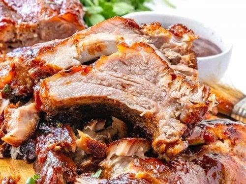

Ribs

Descrition
These baked ribs are so easy — all you need is time.
We bake the ribs before adding any sauce, and then when baked, we brush on our favorite barbecue sauce.
Ingridients
- 2 to 2 1/2 pounds baby back pork ribs
- Salt and black pepper
Steps
- Heat oven to 275° Fahrenheit (135C).
- If the ribs still have the thin membrane covering the back of the rack, remove it.
- Season both sides of the ribs with a generous amount of salt and pepper. If you are using a spice rub, add season the ribs with it now.
- Place the ribs, meat-side up, into a large roasting pan or rimmed baking sheet.
- Cover the pan or baking sheet tightly with aluminum foil, and then bake until the meat falls easily from the bones, 2 ½ to 3 ½ hours.